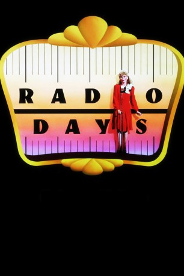

#9478 Radio Days
Auszeichnungen: für 2 Oscars nominiert 2 BAFTA-Awards gewonnen
 
 IMDB-Wertung: 7.6 / 10
IMDB-Wertung: 7.6 / 10  Tomatometer: 88
Tomatometer: 88  Metascore: 0
Metascore: 0 
Brooklyn in den 40ern: In der Familie des kleinen Joe dreht sich alles nur ums Radio. Der Vater hört Sportberichte, Tante Bea sucht einen Mann und übt am Radio die neuesten Tanzschritte. Das gesamte Denken und Handeln der Familie wird durch den Kasten beeinflusst.
Jahr: 1987
Dauer: 88 Minuten
FSK:
Land: USA Studio: Orion PicturesTonspuren:
Untertitel: Englisch,
Auflösung: 1080p (1920x1040) Größe: 9072 MB
Genre: Komödie
Regisseur:  Woody Allen
Woody Allen
Drehbuch: Woody Allen
Soundtrack:
Darsteller:
 Mike Starr als Burglar
Mike Starr als Burglar Paul Herman als Burglar
Paul Herman als Burglar- Don Pardo als 'Guess That Tune' Host
- Helen Miller als Mrs. Needleman
 Julie Kavner als Tess, the mother
Julie Kavner als Tess, the mother Wallace Shawn als Masked Avenger
Wallace Shawn als Masked Avenger Seth Green als Joe
Seth Green als Joe- Michael Tucker als Martin, the father
 Josh Mostel als Abe
Josh Mostel als Abe Hy Anzell als Mr. Waldbaum
Hy Anzell als Mr. Waldbaum Judith Malina als Mrs. Waldbaum
Judith Malina als Mrs. Waldbaum Dianne Wiest als Bea
Dianne Wiest als Bea- Rebecca Nickels als Evelyn Goorwitz
- Mindy Morgenstern als 'Show & Tell' Teacher
 Kenneth Mars als Rabbi Baumel
Kenneth Mars als Rabbi Baumel Mia Farrow als Sally White
Mia Farrow als Sally White- Tito Puente als Latin Bandleader
- Larry David als Communist Neighbor
- Rebecca Schaeffer als Communist's Daughter
- Brian Mannain als Kirby Kyle
- Todd Field als Crooner
- Roberta Bennett als Teacher with Carrot
 Danny Aiello als Rocco
Danny Aiello als Rocco Jeff Daniels als Biff Baxter
Jeff Daniels als Biff Baxter- Kitty Carlisle als Radio Singer
 Robert Joy als Fred
Robert Joy als Fred Mercedes Ruehl als Ad Man
Mercedes Ruehl als Ad Man Bruce Jarchow als Ad Man
Bruce Jarchow als Ad Man- David Cale als Director
- Ruby Payne als Diction Student
 Richard Portnow als Sy
Richard Portnow als Sy Tony Roberts als 'Silver Dollar' Emcee
Tony Roberts als 'Silver Dollar' Emcee Diane Keaton als New Year's Singer
Diane Keaton als New Year's Singer William H. Macy als Radio Voice
William H. Macy als Radio Voice Kenneth Welsh als Radio Voice
Kenneth Welsh als Radio Voice- Sandy Dell als Crying Woman (uncredited)
 Woody Allen als Joe, the Narrator (uncredited)
Woody Allen als Joe, the Narrator (uncredited)- David Bickford als Silver Dollar Assistant (uncredited)
- Marie Gabrielle als Young Sailors Wife (uncredited)
 Zach Grenier als Audience Member (uncredited)
Zach Grenier als Audience Member (uncredited)- Ron Leir als Radio Actor (uncredited)
- George Maniere als Guess That Tune Trumpet Player in Band (uncredited)
 Fred Melamed als Bradley (uncredited)
Fred Melamed als Bradley (uncredited)- Ilana Rapp als Counter Girl (uncredited)
- Ruth Rugoff als Rita (uncredited)
- Hester Schell als Girl at the Cafe (uncredited)
- Martin Rosenblatt als Mr. Needleman
- Danielle Ferland als Child Star
- Julie Kurnitz als Irene
- David Warrilow als Roger
Datei: X:\1987\Radio Days (1987, FSK, 1920x1040).mkv seit 04.09.2018
Festplatte: HD 1987-1991
 Es gibt insgesamt 50 Filme in der Gruppe '1987'
Es gibt insgesamt 50 Filme in der Gruppe '1987'